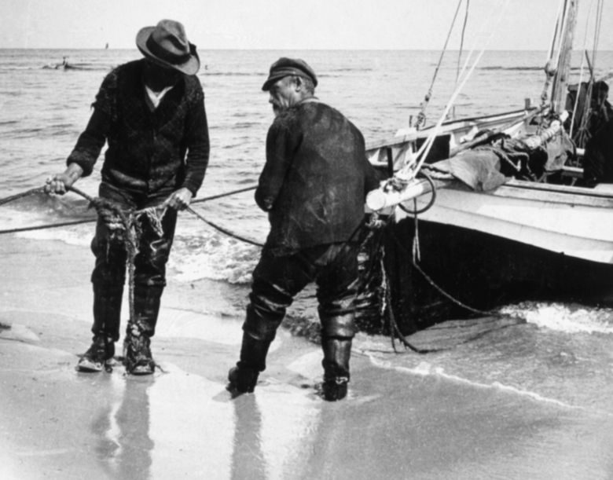
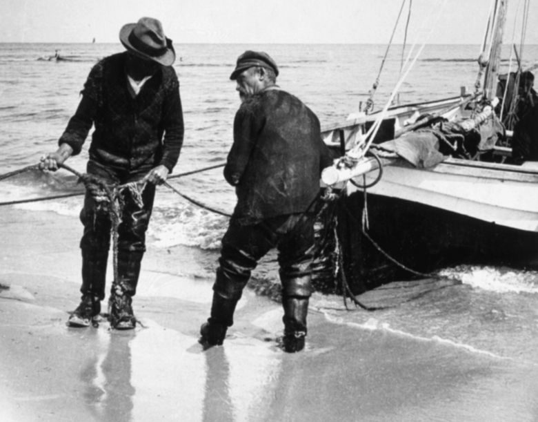

Der Fisch des Jahres 2021 ist der atlantische Hering, Clupea harengus, auch „Silber des Meeres“ genannt. Er wurde vom Deutschen Angelfischverband, dem Bundesamt für Naturschutz und in Abstimmung mit dem Verband deutscher Sporttaucher dazu gekürt. Der Hering ist der wichtigste Nutzfisch der Meere, obwohl sein Bestand derzeit gefährdet ist. Er ist ein Schwarmfisch, lebt gesellig und weidet das Meer nach Nahrung ab. Die Fischer kennen ihre Wanderwege und folgen ihnen.
In meiner Heimatstadt Stettin habe ich oft diesen Spruch gehört: „Hunderttausend Heringsfässer lagern auf der Lastadie und Stettin versendet sie.“ Hierher kamen Heringe von den Hochseefischern, die in der Nordsee bis in den Atlantik und nach Island fischten. Der Fang wurde dann gleich auf dem Hochseefischdampfer eingesalzen.
Der Stettiner Arzt Ludwig Schleich, Entdecker der örtlichen Betäubung, behauptet in seinem Buch „Besonnte Vergangenheit“, dass seine Heimatstadt das Gepräge einer echten Fischer- und Kommerzstadt besaß. Die Lagerschuppen für Heringe waren kilometerlang und bildeten, wie der angeführte Spruch schon aussagte, den größten Stapelplatz für Fisch in Deutschland. Zwischen Baum- und Hansabrücke war das Fischbollwerk. Hier wurden die Heringe verkauft. Heringe waren preiswert. Den Maklern wurde nach altem Brauch eine Heringsprobe vom Fass gereicht.
In den vergangenen zehn Jahren Angelpraxis habe ich im Rhein und in zahlreichen anderen Gewässern die unterschiedlichsten Fischarten gefangen. Bestimmte Fischarten habe ich dabei besonders gut und häufig im Frühjahr und Sommer gefangen, andere Fischarten widerum wurden erst im Herbst und Winter richtig aktiv und somit fängig.
Als Angelanfänger habe ich in der Vergangenheit viele Fehler gemacht und daraus gelernt - ich habe zum Beispiel gelernt, dass es wenig Sinn macht im Januar auf Aal zu angeln, da Aale erst aktiv werden sobald sich das Wasser auf über 10 Grad erwärmt. Ich habe u.a. auch gelernt, dass man Barben am Rhein im Spätsommer/Herbst wesentlich besser fangen kann als im Frühjahr ...
Über die Jahre habe ich mir so bestimmte Beißzeiten von vielen Fischarten gemerkt und eingeprägt - diese nützlichen Infos zu Beißzeiten möchte ich nun hier im nachfolgenden Beißindex an meine Leser weitergeben !
hier können Sie nachlesen, wo sich die Fische in den unterschiedlichen Jahreszeiten aufhalten und wie sie sich erfolgreich beangeln lassen.
In nachfolgender Tabelle finden Sie eine Aufstellung der meisten bei uns beheimateten Süßwasserfische und die besten Zeiten/Jahresphasen, in denen die Fischarten besonders aktiv sind und gut gefangen werden können.
Wichtig: Diese Tabelle basiert auf persönlichen Erfahrungen und gilt nur zur Orientierung - Achten Sie unbedingt auch auf die gesetzlichen Schonzeiten und Mindestmaße aller Fische !
...
Zur Info: Die Fische in der Tabelle sind alphabetisch geordnet.
Bedeutung der Symbole:
√ = fängig aber eher zufällig
√√ = aktiv und gut fängig
√√√ = sehr aktiv und sehr gut fängig
| Juni | Juli | Aug. | |
|---|---|---|---|
| Barsch | √√√ | √√√ | √√√ |
| Brassen | √√ | √√ | √√√ |
| Döbel | √√ | √√√ | √√√ |
| Giebel | √√√ | √√√ | √√√ |
| Graskarpfen | √√ | √√√ | √√√ |
| Gründling | √√ | √√√ | √√√ |